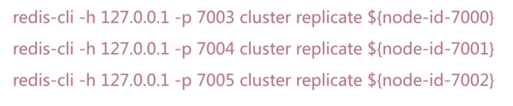
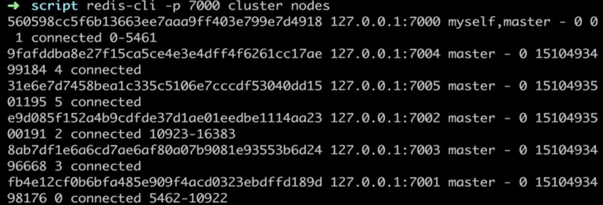

Redis实战
[TOC]
Redis是开源的，基于键值对的的存储服务系统。支持多种数据结构，高性能功能丰富。
作者：Salvatore Sanfilippo（antirez）
23000 lines of code。
- 高性能key-value服务器
- 多种数据结构
- 丰富的功能
- 高可用分布式支持
Redis八个特性：
- 速度快：10w ops，存储在内存，C语言编写，单线程。
- 持久化：rdb和aof
- 多种数据结构：主要的有5种
- 支持多种编程语言：java、python、lua、nodejs等
- 功能丰富：发布订阅，事务，lua脚本、事务、pipeline
- 简单：23000 line of code，带着问题看代码，不依赖外部库，单线程模型，
- 主从复制：
- 高可用、分布式：Redis-Sentinel（v2.8）高可用，Redis-Cluster（v3.0）分布式
多种数据结构（衍生）：
- BitMaps：位图
- HyperLogLog：嘲笑内存唯一值计数
- GEO：地理信息定位
典型使用场景：
- 缓存系统：
- 计数器：提供了相应的计数命令
- 消息队列系统：
- 排行榜：提供了有序集合，排行榜。
- 社交网络
- 实时系统：例如使用位图实现过滤器功能
Redis安装
$ wget http://download.redis.io/releases/redis-3.0.7.tar.gz
$ sudo tar -xvf redis-3.0.7.tar.gz
$ sudo ln -s redis-3.0.7 redis
$ cd redis
$ sudo make && make install
- Redis-server Redis服务器
- redis-cli Redis命令行客户端
- redis-benchmar 基准测试，性能测试
- redis-check-aof 对aof进行修复
- redis-check-dump rdb修复检查工具
- redis-sentinel Sentinel服务器
三种启动方式
- 最简启动：
- 配置文件启动
- 动态参数启动
生产环境选择配置启动。
redis连接：
# redis-cli -h host -p port
Redis客户端返回值
- daemonize：是否是守护进程
- port：对外端口，默认6379，Merz 意大利歌手
- logfile：Redis系统日志
- dir：Redis工作目录
通用命令：
- keys：计算所有的键，一般不在生产环境使用。keys是一个重命令，单线程可能会阻塞其他命令。可以通过热备从节点使用，或用scan。
- dbsize：可以在生产环境使用，redis内置了计数器。O（1）
- exists key：
- del key
- expire key seconds，ttl key可以查看过期时间，persist，去掉key的过期时间。
- type key
数据结构与内部编码：
- string：
- raw，int，embstr
- hash：
- hashtable，ziplist
- list：
- linkedlist，ziplist
- set：
- hashtable，intset
- zset：
- skiplist，ziplist
单线程架构
redis在一个瞬间只会执行一条命令。拒绝长（慢）命令，如keys，flushall等。
- 纯内存
- 非阻塞io
- 无线程切换开销
字符串：
字符串的value不能大于512M，命令：get、set、del、incr、decr、incrby、decrby。
如：incrby counter 3
场景：缓存，计数器，分布式锁等等。
setnx key value：key不存在，才设置。类似于add
set key value xx：key存在，才设置。类似于update
mset，mget批量操作:省去大量网络操作的时间。
getset key newvalue ：相当于set key newvalue并返回旧的value
append key value ： 将value追加到旧的value
strlen key 返回字符串的长度。
incrbyfload key 3.5
getrange key start end：获取字符串制定下标的所有值
setrange key index value
Hash
特点：Mapmap，Small redis，Field不能相同 value可以相同
重要api
hget、hset、hdel
hexists，hlen
hgetall key ： 返回hash key对应所有的field和value
hvals key：返回所有field的valud
hkeys key ：返回所有field
小心使用hgetall
实现用户信息的三种方案：
- string v1:hashmap序列化。序列化开销大。
- key值，分散的key-value实现
- hash：直观，节省空间，可以部分更新，hash编程复杂，无法控制过期时间。
列表
有序的，可以重复的，左右两边插入或弹出
重要api
- 增
- rpush key value1 value2 ...
- linsert key before|after value newValue
- 删除
- lpop key：从列表左边弹出一个item
- rpop key
- lrem key count value
- ltrim key start end 按照索引范围修剪列表，做大的列表删除。
- 查询
- lrange key start end（包含end）获取列表制定索引范围的item
- lindex key index。O(N)
- llen 获取列表的长度
- 改
- lset key index newValue
补充命令
blpop key timeout：
lpop的阻塞版本
Tips
- LPUSH + LPOP = STACK
- LPUSH + RPOP = QUEUE
- LPUSH + LTRIM = Capped Collection
- LPUSH + BRPOP = Message Queue
集合
无序的，无重复的，支持集合间的操作
API
- sadd key element，srem
- scard 计算集合的大小
- sismember
- srandmember user:1:follow count=his 从集合中随机挑count个元素
- spop user:1:follow = sports 从集合中随机弹出一个元素
smembers小心使用，返回无序的
sinter:交集
sdiff差集
sunion并集
Tips
Sadd = Tagging
Spop/SRandmember = Random item
Sadd + Sinter = Social Graph
有序集合
一个集合，集合的元素是有序的。
Key score value
Api
- zadd key score element（可以是多对） O(logN)
- zrem key element(可以是多个) o(1)
- zscore key element 获得分数
- zincrby key increSore element
- zcard key 返回元素的总个数 O(1)
- zrange key start end [withscores] o(log(n) +m) 返回制定索引范围内的升序元素【分值】
- zrange key minScore maxScore [withscores]
- zcount key minScore maxScore
- zremrangebyrank key start end 删除指定排名的元素
Redis客户端
Java客户端
Jedis直连
Jedis是基于java语言的redis客户端。
Jedis（String host, int port, int commectionTimeout, int soTimeout)
Jedis连接池
Python客户端
redis-py
Redis其他优秀功能
慢查询
生命周期
两个配置
slowlog-max-len，默认128
slowlog-slower-than，默认10000微妙，=0所有命令都接入到慢查询，<0不接入所有命令
慢查询命令：
- slowlog get [n] ： 获取慢查询队列
- slowlog Len :
- slowlog reset:清空
运维经验
- slowlog-slower-than不要设置过大，默认10ms，通常设置1ms，QPS万级别，平均是0.1毫米，根据QPS决定阈值大小
- slowlog-max-len不要设置过小，默认为128
- 理解命令生命周期
- 定期持久化慢查询
流水线 pipeline
Redis的命令时间是微妙级别的。
Pipeline每次条数要控制（网络）
java中使用pipeline
Jedis jedis = new Jedis("127.0.0.1", 6379);
for(int i=0; i< 100; i++){
Pipeline pipeline = jedis.pipelined();
for(int j = i*100; j<(i+1)*100; j++){
pipeline.hset("hashkey" + j, "field" + j , "value" + j);
}
pipeline.syncAndReturnAll();
}
与原生m操作
m操作是原子的。非原子的。redis会对pipeline进行拆分。
使用建议
- 注意每次pipeline携带的数据量。
- pipeline每次只能作用在一个Redis节点上。
- m操作与pipeline的区别。
发布订阅
发布者、订阅者、频道，无法获取历史消息，没有消息堆积的功能。
发布订阅模型：
API
- publish channel message
- subscribe 【channel】 一个或者多个
区别于消息队列：
位图 bitmap
可以操作位
api
setbit key offset value
场景：
独立用户统计
如果只有10万用户数，优先选择set
HyperLogLog
基于HyperLogLog算法：极小的空间实现独立用户数的统计。
本质还是字符串
三个命令：
pfadd key element
pfcount key
GEO
redis 3.2添加，地理信息定位：存储经纬度，计算两地距离，范围计算。通过zset实现。
api
- geo key longitude latitude member
- geopos key member
- geodist key member1 member2 [unit]
- georadius 指定范围内的member
Redis持久化
持久化的作用：
什么是持久化：redis所有数据保存在内存中，对数据的更新将异步保存在磁盘中。
持久化的实现方式：
- 快照：mysql dump /redis rdb
- 写日志： mysql binlog。/ hbase hlog / redis aof
RDB
是二进制的。是复制媒介。
触发机制：save（同步），bgsave（异步），自动
文件策略：如存在老的RDB文件，新替换老
复杂度：O(n)
save seconds changes 不是一种很好的方式
最佳配置
# save 900 1
# save 300 10
# save 60 10000 #一般将save关闭
dbfilename dump-${port}.rdb # 一台机器可以有很多redis，利用多核的优势
dir /bigdiskpath
stop-writes-on-bgsave-error yes
rdbcompression yes
触发机制-不容忽略方式
- 全量复制
- debug reload
- shutdown
总结：
- rdb是Redis内存到硬盘的快照，用于持久化
- save通常会阻塞Redis
- bgsave不会阻塞Redis，但是会fork新进程
- save自动配置满足任意一个就会被执行
- 有些出发机制不容忽视
AOF
rdb save耗时。bgsave耗内存。不可控、丢失数据。
引入aof
aof三种策略
always
redis命令写入到缓存区，每条命令缓存区fsync到硬盘
everysec
redis命令写入到缓存区，每条命令缓存区fsync到硬盘
non
os决定fsync
aof重写：减少磁盘占用量，加速恢复速度。
重写的两种实现方式：
- bgrewriteaof：实际是对redis命令回溯重写
- aof重写配置
- auto-aof-rewrite-min-size ：aof文件重写需要的尺寸
- auto-aof-rewrite-percentage ：aof文件增长率
统计项：
- aof_current_size ： aof当前尺寸（单位：字节）
- aof_base_size：aof上次启动和重写的尺寸（单位：字节）
配置：
appendonly yes
appendfilename "appendonly-${port}.aof"
appendfsync everysec
dir /bigdiskpath
no-appendfync-on-rewrite yes # rewrite时不执行append 可能会有数据丢失（优先考虑性能）
auto-aof-rewrite-percentage 100
auto-aof-rewrite-min-size 64mb
rdb和aof抉择
启动优先级:
rdb最佳策略：
“关”，
集中管理，
主从、从开？：从最好也不要开
aof的最佳策略：
- “开”：缓存和存储
- aof重写集中管理
- everysec
最佳策略：
- 小分片：每个redis的max-memory设置一个最大值
- 缓存或者存储
- 监控（硬盘、内存、负载、网络）
- 足够的内存，不要全部用完
redis持久化开发运维常见问题
fork操作
同步操作，与内存量息息相关：内存越大，消耗越长（与机器类型有关）
查看命令：info:latest_fork_usec
改善fork：
- 使用好的机器，
- 控制最大可用内存：maxmemory
- 合理配置linux内存分配策略：vm.overcommit_memory=1
- 降低fork频率：例如放宽aof重写自动触发时机，不必要的全量复制。
子进程开销和优化
cpu
- 开销：rdb和aof文件生成，属于cpu密集型
- 优化：不要cpu绑定（不要把redis绑定在一个cpu上，不和cpu密集型部署
内存
- 开销：fork内存开销，copy-on-write。
- 优化：echo never > /sys/kernel/mm/transparent_hugepage/enabled
硬盘
- 开销：aof和rdb文件写入
- 不要和高硬盘负载服务部署在一起：存储服务、消息队列等
- no-appendfsync-on-rewrite=yes
- 根据写入量决定磁盘类型。如ssd
- 单机多实例持久化文件目录可以考虑分盘。
aof追加阻塞
info persistence
Redis复制原理和优化
redis复制是故障经常发生的点，需特别注意。
单机问题：
- 机器故障
- 容量瓶颈
- QPS瓶颈
主从复制的作用
- 数据副本
- 扩张读性能
总结：一个master可以有多个slave，一个slave只能有一个master，数据流向必须是单向的，master到slave
两种方式主从复制：
- slaveof命令
- 配置
slaveof ip port
slave-read-only yes
全量复制和增量复制：
master_repl_offset :偏移量
全量复制：
开销：
- bgsave时间
- rdb文件网络传输时间
- 从节点清空数据时间
- 从节点加载rdb的时间
- 可能的aof重写时间
部分复制
故障处理
自动故障转移
常见问题
- 读写分离：读流量分摊到从节点
- 可能遇到的问题：复制数据延迟，读到过期数据，从节点故障
- 配置不一致
- maxmemory不一致：丢失数据
- 规避全量复制
- 第一次全量复制：不可避免，小主节点、低峰
- 节点运行id不匹配，如主节点重启（运行id变化），故障转移，例如哨兵或集群
- 复制积压缓冲区不足：网络终端，部分复制无法满足，增大复制缓冲区配置，rel_backlog_size,网络“增强”。
- 规避复制风暴
- 单主节点复制风暴
- 单机器复制风暴
Redis Sentinel
解决手动主从切换的问题。sentinel可以监控多套主从。
安装与配置
- 配置开启主从节点
- 配置开启sentinel监控主节点。（sentinel是特殊的redis）
- 实际应该多机器
- 详细配置节点
sentinel配置
- sentinel monitor mymaster 127.0.0.1 7000 2 其中2是指有2个sentinel认为master是down的，那么判断maste为down
- sentinel paralle-syncs mymaster 1 指master down了之后每次复制1个slave。
上述配置加一个deamonize yes
启动方式：redis-sentinel redis-sentinel-26379.conf·
Java客户端
客户端接入流程
- Sentinel地址集合
- MasterName
- 不是代理模式
三个定时任务
- 每10秒每个sentinel对master和slave执行info
- 发现slave节点
- 确认主从关系
- 每2秒每个sentinel通过master节点的channel交换信息（pub/sub）
- 通过sentinel:hello 频道交互
- 交互对节点的“看法”和自身信息
- 每1秒每个sentinel对其他sentinel和redis执行ping
- 心跳检测，失败的依据
主观下线和客观下线
sentinel monitor masterName ip port quorun
sentinel down-after-milliseconds my master 30000
主观下线：每个sentinel节点对redis节点失败的“偏见”
客观下线：所有sentinel节点对Redis节点失败“达成共识”（超过quorum个同意）
sentinel is-master-down-by-addr
领导者选举
原因：只有一个sentinel节点完成故障转移
选举：通过sentinel is-master-down-by-addr命令都希望成为领导者
故障转移
常见开发运维问题
节点运维
Redis Cluster
为什么需要集群：
- 并发，单机10万/秒，业务需要100万/每秒
- 数据量，机器内存：16～256G，业务需要500G
Redis Cluster isreleased in 3.0
数据分布概论
- 哈希分布
- 节点取余分区：扩容困难，需要多倍扩容，不建议使用。
- 一致性哈希分区：哈希+顺时针（优化取余）
- 虚拟槽分区
- 预设虚拟槽
- 顺序分布
基本架构
分布式架构，节点是互相通信的。需要智能客户端，否则命中率不高。
- 节点：cluster-enable：yes
- meet：节点之间互相通信，所有节点共享消息
- 指派槽：
- 复制：
特性：复制，高可用，分片
原生安装
原生命令安装-理解架构
配置开启节点
开启节点：
- redis-server redis-7000.conf
- redis-server redis-7001.conf
- ...
- redis-server redis-7006.conf
meet
指派槽
主从

原生安装-具体安装
节点配置
启动，redis-server redis-port.conf
查看状态：
节点握手
指定槽

主从分配
验证安装完成：
如果在三台机器上，可以拓扑错开，例如：
集群伸缩
原理：
扩容集群
- 准备新节点
- 集群模式
- 配置和其他节点统一
- 启动后是孤儿节点